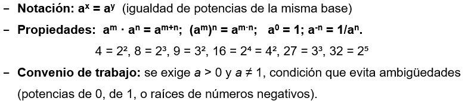
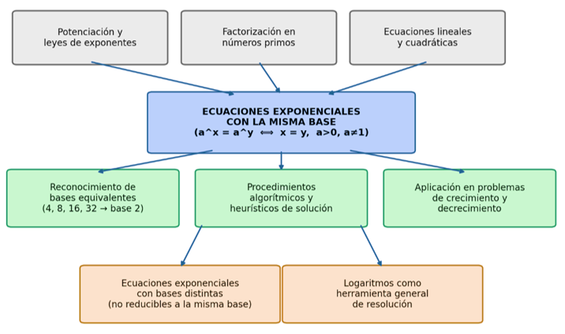
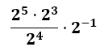
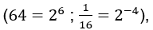

IV. ANÁLISIS DE CONTENIDO
4.1. CAMPO NOMINAL Y SIMBÓLICO.
"Siguiendo el modelo de análisis de contenido propuesto por Gómez (2007) y Rico, Marín, Lupiáñez y Gómez (2008), se organiza la estructura conceptual del contenido en los siguientes componentes: campo nominal y simbólico, conceptos clave, procedimientos, y propiedades y relaciones."
Términos técnicos y convenios que el estudiante debe manejar con propiedad:
- Potencia: expresión de la forma an, donde a es la base y n el exponente.
- Ecuación exponencial: ecuación en la que la incógnita aparece en el exponente.
- Base común / bases equivalentes: números que pueden expresarse como potencias de un mismo número (por ejemplo, 4, 8, 16 y 32 son potencias de 2).

4.1.2. Conceptos clave (definiciones y atributos)
Conceptos centrales:
- Ecuación exponencial con la misma base: igualdad de dos potencias que tienen (o pueden reescribirse con) la misma base.
- Bases equivalentes: expresiones numéricas que representan el mismo valor mediante potencias de un mismo número.
- Propiedad fundamental de las potencias de igual base: si aᵐ = aⁿ (con a > 0, a ≠ 1), entonces m = n.
Prerrequisitos necesarios:
- Propiedades de las potencias (producto, cociente, potencia de potencia).
- Exponentes enteros y fraccionarios.
- Ecuaciones lineales y cuadráticas.
- Concepto de raíz como exponente fraccionario.
4.1.3. Procedimientos
Procedimientos Algorítmicos:
1- Observar las bases de ambos miembros de la ecuación.
2- Reescribir las bases como potencias de un mismo número (reconocimiento de
bases equivalentes).
3- Aplicar la propiedad: si las bases son iguales, se igualan los exponentes.
4- Resolver la ecuación algebraica resultante.
5- Verificar la solución en la ecuación original (control de dominio).
Procedimientos Heurísticos:
- Decidir cuál es la base más conveniente para reescribir ambas expresiones.
- Explorar distintas formas de expresar un número como potencia.
(ej. 16 como 2⁴ o como 4²).
- Detectar cuándo una ecuación no se puede resolver solo con igualación de bases y se requiere otro método (logaritmos).
4.1.4. Propiedades y relaciones
- Propiedad fundamental: ax = ay ⟺ x = ypara a > 0, a ≠ 1. Dado que la la función f(x) = ax es estrictamente monótona (inyectiva).
- Leyes de los exponentes: producto de potencias de igual base, cociente de potencias, potencia de una potencia, exponente cero, exponente negativo y exponente racional.
- Conexión con los logaritmos: cuando las bases no pueden igualarse mediante factorización, se requiere el logaritmo como herramienta general (frontera con el contenido siguiente en la secuencia curricular).
- Conexión con la función exponencial y su gráfica: el punto de intersección entre dos curvas ax corresponde geométricamente a la solución algebraica.
4.1.5.Red conceptual
El siguiente esquema ubica el contenido central entre sus prerrequisitos y los conceptos que de él se derivan:

4.2. CLASIFICACION FENOMENOLOGÍCA.
“ El contenido matemático puede analizarse desde dos tipos de fenómenos: los que nacen dentro de la propia matemática (Intra-matemática) y los que provienen de situaciones del mundo real (Extra-matemática) (Freudenthal 1983).”
4.2.1. Fenomenología extra-matemática (situaciones del entorno)
Son las situaciones reales que le dan sentido a este contenido, es decir, para qué sirve en la vida diaria o en otras ciencias. Dentro de las categorías que propone PISA/OCDE (2019) para clasificar estos fenómenos de cantidad, espacio y forma, cambio y relaciones, e incertidumbre y datos, el contenido de ecuaciones exponenciales se relaciona principalmente con dos:
a. Fenómenos Covariacionales (cambio y relaciones): son el centro de este contenido. Una ecuación exponencial describe cómo una cantidad cambia con el tiempo, multiplicándose por un mismo factor en cada intervalo. Ejemplos: el crecimiento de una población, el interés compuesto en las finanzas, la desintegración de una sustancia radiactiva. Solo para citar ciertos ejemplos
b. Fenómenos de medida o cantidad: aparecen de forma secundaria, porque en todos estos ejemplos se necesita medir o cuantificar algo (dinero, número de habitantes, cantidad de sustancia).
Nota importante: No se incluyen los fenómenos espaciales ni los estocásticos, porque no son centrales para este contenido:
Los fenómenos espaciales (forma, posición, figuras) no forman parte de este tema; la gráfica de la función exponencial pertenece más bien al sistema de representación, no a un fenómeno espacial en sí.
Los fenómenos estocásticos (azar, probabilidad, incertidumbre) tampoco aplican, porque las ecuaciones exponenciales con la misma base son deterministas: el resultado siempre está definido por la ley exponencial, sin componente de azar.
4.2.2. Fenómenos Intra-matemática
“Son las ideas matemáticas previas que hacen posible resolver este tipo de ecuaciones. (Freudenthal, 1983)."
Entre ellas están:
· Las propiedades de la potenciación (multiplicación, división y potencia de potencias).
· La función exponencial como una función que no repite valores (a cada entrada le
corresponde una única salida y viceversa), lo cual permite igualar los exponentes
cuando las bases son iguales.
· La resolución de ecuaciones en general, ya que la ecuación exponencial es un caso
particular de ecuación algebraica.
· La transformación de números en potencias de una base común, paso clave para
resolver este tipo de ejercicios.
4.2.3. Situaciones problemáticas contextualizadas
Problema 1 Crecimiento bacteriano (contexto de laboratorio)
En un laboratorio de biología de un centro educativo de Chontales, un cultivo de bacterias se duplica cada 3 horas. Si al inicio del experimento hay 8 bacterias, ¿después de cuántas horas la población será de 512 bacterias?
Modelo: N(t) = 8 · 2(t/3)
Problema 2 — Aplicación de un fungicida (contexto agrícola local)
Un productor de Juigalpa aplica un fungicida cuya concentración en la planta se reduce a la mitad cada día. Si la concentración inicial es de 256 ppm, ¿después de cuántos días la concentración será de 8 ppm?
Modelo: C(t) = 256 . (1/2)t
4.3. SISTEMAS DE REPRESENTACIÓN Y PROCESAMIENTO SEMIÓTICO
4.3.1. Registros de representación presentes.
"Para el análisis de los registros de representación se retoma la teoría de los registros semióticos de Duval (1999, 2006), quien distingue el tratamiento como la transformación dentro de un mismo registro y la conversión como la traducción entre registros distintos, considerando esta última como la operación cognitiva más de mayor complejidad."
· Verbal / lenguaje natural: enunciados de los problemas de crecimiento o decrecimiento (bacterias, fungicida).
· Simbólico / algebraico: la ecuación af(x)=ag(x) a f(x) = g(x) y las leyes de los exponentes que permiten manipularla.
· Gráfico / pictórico: interpretación geométrica de la solución mediante las curvas f(x) ) ax y g(x) = ak; el punto de intersección corresponde a la solución de la ecuación. No se aborda el estudio de la función exponencial como tal (dominio, rango, asíntotas), únicamente esta lectura puntual de la solución.
· Tabular / numérico: tablas de valores de potencias ( 20,21,22,...,29) para identificar bases equivalentes.
· Concreto / manipulativo: doblado sucesivo de una hoja de papel para visualizar el crecimiento (o el corte a la mitad para el decrecimiento), y tarjetas de potencias para emparejar bases equivalentes.
4.3.2. Tareas de tratamiento semiótico
"El tratamiento es la transformación de una representación dentro de un mismo registro, sin cambiar de sistema de representación (Duval, 1999)..."
Tarea 1 — Tratamiento dentro del registro simbólico/algebraico
Simplifica la siguiente expresión hasta obtener una potencia única de base 2:

Esta tarea exige aplicar sucesivamente las leyes de los exponentes (producto de potencias, cociente de potencias y potencia negativa) para reducir la expresión a una sola potencia, sin salir del registro algebraico en ningún momento. Resultado: .
Tarea 2 — Tratamiento ligado al procedimiento central del contenido
Transforma 64 y 1/16 en potencias de base 2.
Esta tarea pone en juego el reconocimiento de bases equivalentes

(, habilidad prerrequisito directamente vinculada al fenómeno Intra-matemática, y necesaria para poder igualar exponentes al resolver la ecuación.4.3.3. Tareas de conversión semiótica
"La conversión es el paso de una representación a otra en un registro distinto, manteniendo el mismo objeto matemático (Duval, 2006)..."
Esta tarea exige que el estudiante debe darse cuenta de que dos formas distintas de representan lo mismo.
De verbal a algebraico. Tarea 1
"Un video se comparte en redes sociales y el número de veces que se comparte se duplica cada día. Si el primer día se compartió 4 veces, escribe la ecuación que permite saber en cuántos días se alcanzarán a compartirse 128 veces."
El estudiante convierte un enunciado en una ecuación:
De tabular a algebraico. Tarea 2
A partir de la tabla, escribe la ecuación exponencial y encuentra x para que N(x) = 512:
| x | 0 | 1 | 2 | 3 |
| N(x) | 8 | 16 | 32 | 64 |
El estudiante identifica el patrón (se multiplica por 2 cada vez), deduce la ecuacion y resuelve.
De algebraico a gráfico. Tarea 3
Dada la ecuación , ubica en un plano cartesiano el punto donde se cruzan la gráfica de y la recta .
Aquí solo se pide ubicar el punto de la solución ( ), sin estudiar la función completa.
De concreto a tabular. Tarea 4
“ Dobla una hoja de papel varias veces y anota en una tabla cuántas capas hay
después de cada doblez”.
El estudiante pasa de la acción física (doblar) a una tabla de números, viendo el patrón de duplicación antes de escribirlo con símbolos.
4.4. DEMANDAS Y NIVELES COGNITIVOS (EJEMPLO ALTERNATIVO)
"Siguiendo el ciclo de modelización matemática propuesto por PISA/OCDE (2019), las demandas cognitivas del contenido se organizan en tres procesos: formular, emplear e interpretar/evaluar."
Situación base: Durante un recreo, un estudiante comparte un rumor sobre la suspensión de clases. Al inicio, 3 estudiantes lo conocen, y cada 5 minutos el número de estudiantes que lo saben se duplica.
1. Formular (Traducción)
Formula la ecuación que permite saber en cuántos minutos 96 estudiantes conocerán el rumor (sin resolverla).
Demanda cognitiva: identificar en el enunciado el valor inicial (3), el patrón de duplicación (cada 5 minutos) y la incógnita, La ecuacion seria:
2. Emplear (Ejecución)
Resuelve la ecuación planteada.
a) ; ; ; ;
Demanda cognitiva.
a) Aplicar correctamente el procedimiento
b) Despejar y convertir a potencia de la misma base
c) Igualar exponentes.
3. Interpretar / Evaluar (Reflexión)
El resultado fue t = 25 minutos. Si el recreo dura solo 15 minutos.
Interpreta: ¿alcanzará el rumor a esos 96 estudiantes antes de que termine el recreo? ¿Qué significa esto en la práctica?
Demanda cognitiva: el estudiante debe comparar el resultado (25 minutos) con la duración real del recreo (15 minutos) y concluir que el rumor no alcanzará a 96 estudiantes en ese tiempo, a los 15 minutos habrán transcurrido solo 3 duplicaciones, es decir estudiantes. Se debe relacionar el resultado matemático con una restricción real del contexto, no solo calcular.
4.5. SENTIDOS Y MODOS DE USO
4.5.1. Modo instrumental / Herramienta.
El concepto se usa como herramienta para resolver una necesidad práctica concreta de la vida cotidiana, sin que interese la teoría o la estructura formal detrás, solo el resultado útil.
Un productor agrícola de Chontales necesita saber en cuántos días una plaga alcanzará un nivel crítico en su cultivo, para decidir cuándo aplicar el control fitosanitario. Usa la ecuación exponencial únicamente como medio para obtener ese número de días y tomar la decisión a tiempo.
Aquí las ecuaciones exponenciales con la misma base funcionan como una herramienta de cálculo al servicio de una decisión práctica, el agricultor no necesita entender la inyectividad de la función ni la teoría que lo fundamenta , solo obtener el dato que necesita.
4.5.2. Modo estructural / Formal.
El concepto se usa únicamente para resolver la ecuación en sí, aplicando sus propiedades (leyes de los exponentes, igualdad de exponentes con bases iguales), sin que haya ninguna situación real detrás ni ninguna interpretación posterior.
Dada la ecuación , resuélvela aplicando la propiedad de inyectividad de la función exponencial.
En este modo, el estudiante manipula la ecuación como una estructura algebraica pura, poniendo en juego las propiedades formales que ya se identificaron en el apartado II como fenómenos Intra-matemática.
4.5.3. Modo comunicativo / Descriptivo
El concepto se usa para explicar, con palabras claras, qué está pasando en una situación real y por qué. No se trata de calcular ni de manipular la ecuación, sino de tomar lo que dice el modelo matemático y convertirlo en una explicación que otra persona, que no sabe matemática, pueda entender y usar para actuar.
Un estudiante debe explicarle a su familia, usando el modelo , por qué es importante refrigerar la leche apenas se ordeña, describiendo qué significa que la base sea 2 y qué representa cada 30 minutos sin refrigeración.
Aquí el énfasis no está en calcular ni en la estructura formal, sino en comunicar el significado del modelo a alguien más, traducir la matemática a una explicación comprensible que informe una decisión cotidiana (refrigerar la leche a tiempo).
4.6. IMPLICACIONES Y DECISIONES DIDÁCTICAS
4.6.1. Identificación de dificultades y errores frecuentes
Los obstáculos que suelen presentarse en el aprendizaje de ecuaciones exponenciales con la misma base en estudiantes de secundaria:
a) Confusión entre base y exponente: No distingue con claridad cuál es la base y cuál el exponente dentro de la expresión, especialmente cuando la base está elevada a exponentes negativos o fraccionarios.
b) Errores al transformar números en potencias de una base común: Dificultad para descomponer en factores primos. Sin este paso, el estudiante no puede aplicar el procedimiento de igualar exponentes.
c) Aplicación incorrecta de las leyes de los exponentes: Errores común confundir con .
d) Falta de verificación del resultado en el contexto real: el estudiante llega a un valor numérico correcto pero no lo interpreta ni lo relaciona con la situación planteada.
Ejemplo: Un cultivo de bacterias tiene actualmente 800 individuos y se duplica cada 3 horas. ¿Hace cuántas horas el cultivo tenía 100 bacterias?
R/ significa que esas 100 bacterias existieron 9 horas antes.
e) Debilidades aritméticas: Poco dominio de potencias básicas (potencias de 2, 3, 5, 10), lo cual ralentiza o impide el reconocimiento de bases equivalentes.
4.6.2. Orientación de mediación pedagógica
Recomendaciones metodológicas para que el docente secuencie las actividades de forma que prevenga o corrija los errores identificados:
a) Iniciar con el registro concreto/manipulativo
La idea es simple: antes de mostrarle al estudiante la fórmula con letras y números en el exponente, se le hace vivir físicamente el patrón de duplicación con sus propias manos.
Ejemplo: Se le da al estudiante una hoja de papel y se le pide que la doble por la mitad varias veces, contando cuántas capas hay después de cada doblez:
· 0 dobleces → 1 capa. 20 = 1
· 1 doblez → 2 capas. 21 = 2
· 2 dobleces → 4 capas. 22 = 4
· 3 dobleces → 8 capas. 23 = 8
· Entonces la variable es el doblez por tanto la expresión que lo representa seria 2x
b) Reforzar previamente las potencias: Antes de poner al estudiante a resolver ecuaciones completas, practicar primero, por separado, cómo convertir números en potencias de una misma base (por ejemplo, saber que 8 es , o que 81 es ), usando las tablas de potencias de 2, 3, 5 y 10. Así el estudiante domina ese paso solo, antes de tener que usarlo dentro de todo el procedimiento de resolver la ecuación.
c) Ir de lo fácil a lo más complejo: primero poner ejercicios donde el estudiante solo trabaja con números y símbolos (sin contexto), y hasta que domine eso, pasar a problemas donde tenga que traducir un enunciado o una tabla a una ecuación.
d) Usar situaciones cercanas al estudiante: plantear los problemas con ejemplos que el estudiante pueda imaginar fácilmente (bacterias, rumores, plagas del campo), para que al final pueda interpretar el resultado con sentido, y no solo calcular sin pensar en lo que significa.
e) Siempre revisar el resultado: acostumbrar al estudiante a que, después de resolver, compruebe su respuesta sustituyéndola en la ecuación y se pregunte si ese número tiene sentido en la situación del problema. No dejarlo como un paso opcional.
f) Repasar antes de empezar: antes de iniciar el tema, hacer una prueba corta para ver si los estudiantes dominan bien las operaciones con exponentes (multiplicar, dividir, potencias). Así se detectan a tiempo las debilidades y se refuerzan antes de meterse con las ecuaciones.